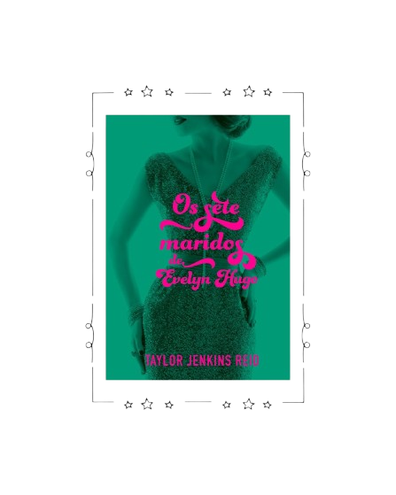
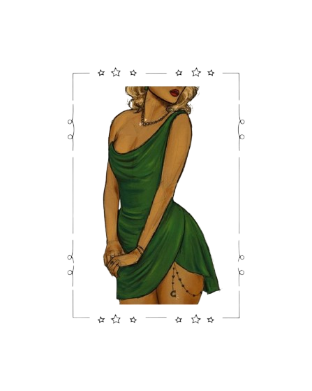
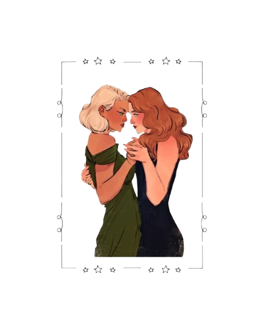

Evelyn e eu
Evelyn era uma mulher de uma complexidade tremenda, e o tempo que passei com ela foi tão complicado quanto sua imagem, sua vida e a lenda que se construiu ao redor de sua figura.
Leia MaisEvelyn Hugo: Uma Diva Feita de Luz e Sombras
Aos 79 anos, a fictícia ícone de Hollywood opta por desvendar sua trajetória à jornalista Monique Grant, uma decisão aparentemente incompreensível que oculta vínculos profundos entre o passado e o presente. Evelyn, caracterizada como uma combinação de Marilyn Monroe, Elizabeth Taylor e Rita Hayworth, não é meramente uma figura de glamour: é uma sobrevivente. Nascida Evelyn Herrera, filha de uma imigrante cubana, ela reinventa-se ao suprimir suas origens, tingir os cabelos de louro e adotar um sobrenome "francês" para ascender em uma Hollywood dominada por machismo e preconceito.

Sete Casamentos, Uma Vida de Segredos
A narrativa se organiza em torno dos sete casamentos de Evelyn, cada um simbolizando uma etapa de sua ascensão e queda. Desde uniões estratégicas até relacionamentos abusivos, como o com Don Adler, que a subjuga à violência doméstica, os casamentos são véus para resguardar seu maior segredo: o amor por Celia St. James, atriz e companheira de vida que desafia as convenções heteronormativas da década de 1950. Esse romance, tão intenso quanto tragicamente silenciado, torna-se o núcleo da trama, questionando o custo da autenticidade em um mundo que exige disfarces.

Mais que Fofocas de Hollywood: Um Retrato Social
Além dos escândalos e trajes deslumbrantes, Reid articula críticas incisivas ao sexismo, à homofobia e à exploração na indústria cinematográfica. Evelyn, por exemplo, é sexualizada desde a adolescência, compelida a posar como sweater girl para promover sua imagem, enquanto Celia enfrenta a invisibilidade de sua orientação sexual. A obra também revela a dualidade do jornalismo, por meio de Monique, que renuncia à frieza da imparcialidade para se aprofundar na narrativa repleta de humanidade e culpa.
Sobre a Autora
Taylor nasceu em Acton, no estado de Massachusetts, em 1983. Iniciou sua trajetória literária durante sua ocupação em uma escola de educação secundária, até obter um contrato de publicação. Atuou na produção cinematográfica, dedicando-se à seleção de elencos por 3 anos, até concluir seus estudos universitários e assegurar outra posição profissional.
Personagens
Monique Grant
Monique Grant é uma jornalista de nível inferior que tem a responsabilidade de entrevistar Evelyn Hugo, embora, inicialmente, ela não compreenda o motivo pelo qual Evelyn a convocou especificamente. Ao longo dos diversos dias de entrevistas, Monique constata que possui várias semelhanças com Evelyn, e à medida que as entrevistas avançam, Monique manifesta sua habilidade em reivindicar o que deseja, tanto de Evelyn quanto de seu superior, Frankie, e começa a admirar Evelyn por exibir essa mesma competência ao longo de sua trajetória.
"Desligo o telefone e solto o ar com força. Eu dou conta dessa porra toda."
- página 34
Evelyn Hugo
Evelyn Hugo é a protagonista da narrativa e o foco das entrevistas da repórter Monique Grant. Aos 79 anos, Evelyn, uma das maiores celebridades da Antiga Hollywood, persuade Monique a redigir sua biografia, no entanto, sem explicar os motivos de sua escolha. Esse comportamento manipulador e enigmático é representativo de Evelyn, que sacrificou seu nome, identidade e ética para conquistar notoriedade e êxito. Seus sete matrimônios ocorreram em busca de uma probabilidade amplificada de fama e sucesso.
"Porque eles são só maridos. A Evelyn Hugo sou eu."
- página 352
Celia St. James
Celia St. James é uma atriz e o amor da vida de Evelyn. Celia impressiona Evelyn com seu talento na atuação durante os ensaios para "Mulherzinhas", mas as duas iniciam uma relação vantajosa quando Celia oferece a Evelyn orientações em atuação em troca de sua colaboração em aparições públicas. Com o tempo, Celia e Evelyn se envolvem romanticamente, revelando Celia como ingênua e idealista frente ao realismo pragmático de Evelyn (Celia nasceu em uma família rica e nunca precisou enfrentar dificuldades financeiras, enquanto Evelyn surgiu de origens humildes).
"E, para quem se sentir tentado a dar um beijo na tela da tevê, por favor cuidado para não lascar o dente."
- página 279
O pobre, Ernie Diaz
Ernie Diaz é o primeiro cônjuge de Evelyn. Embora sua união com Evelyn possibilite que ela vá para Hollywood e inicie sua trajetória como atriz, ele demonstra escassa consideração pelos anseios dela e anseia que ela atue como uma esposa convencional da década de 1950. Quando Evelyn o abandona a pedido dos responsáveis pelo Sunset Studio, Ernie fica devastado, revelando que estava totalmente ignorante sobre o fato de Evelyn estar se beneficiando dele.
"Fui para casa e avisei Ernie que ia pedir a separação. Ele chorou por seis horas seguidas."
- página 52
O maldito, Don Adler
Don Adler é o segundo cônjuge de Evelyn. Nascido em uma família de atores, Don experimenta uma imensa pressão para também se transformar em uma grande celebridade cinematográfica, resultando em sua elevada sensibilidade diante de críticas desfavoráveis. Apesar de Evelyn nutrir amor por ele e considerar sua ligação autêntica, Don inicia a agredi-la fisicamente logo após o casamento. Sua propensão a violentar e empurrar Evelyn manifesta-se em períodos de tensão.
“Nós não somos iguais, querida. E sinto muito se tratei você bem demais a ponto de se esquecer disso.”
- página 77
O insaciável, Mick Riva
Mick Riva é uma celebridade pop e o terceiro cônjuge de Evelyn. Mick divulga sua admiração por Evelyn ao manifestar seu anseio de unir-se a ela durante entrevistas, insinuando que ele é um homem extremamente autoconfiante que consegue visualizar Evelyn correspondendo a seu interesse. Quando Evelyn opta por fugir com Mick para atrair a atenção da imprensa, ela compreende que ele é um homem egocêntrico que busca constantemente manter a vantagem.
“Ele gosta de rejeitar pessoas. Gosta de ser condescendente desse jeito.”
- página 170
O esperto, Rex North
Rex North é o quarto cônjuge de Evelyn. As semelhanças que ele compartilha com Evelyn, ou seja, seu pragmatismo, que inclui a alteração de seu nome para alcançar êxito como uma estrela de cinema, assim como Evelyn fez, o tornam querido para ela e estabelecem os alicerces para um matrimônio mutuamente vantajoso (embora quase inteiramente desprovido de amor).
“E acho que sempre vou amar Rex North, um pouquinho que seja, por causa disso.”
- página 185
O brilhante, generoso e sofrido, Harry Cameron
Harry Cameron é um produtor cinematográfico que se torna o melhor amigo de Evelyn ao chegar a Hollywood; eles se casam e têm uma filha (Connor) juntos. Embora Harry procure manter certa distância de Evelyn, com o objetivo de resguardar sua identidade secreta como um homem homossexual, ele acaba reunindo coragem para revelar a ela sobre seu envolvimento com o esposo de Celia, John Braverman. O casamento com Evelyn possibilita que Harry mantenha discretamente sua relação com John (enquanto Evelyn e Celia prosseguem com seu próprio vínculo clandestino).
"Tudo bem se você desabar, eu te seguro. Então eu desabei. E Harry me segurou."
- página 179
O decepcionante, Max Girard
Max Girard é um cineasta francês e o sexto esposo de Evelyn. Após conhecê-la, ele a seleciona para seus filmes Boute-en-Train e Three A. M. , sob a condição de que ela aceite filmar cenas de nudez. O vínculo entre Max e Evelyn se torna sexual e romântico após o lançamento de seu filme, All for Us, que concede a ambos um Oscar. No entanto, ela rapidamente se dá conta de que ele está mais interessado nela como figura pública do que como indivíduo, e que prefere utilizá-la para promover sua imagem pública.
"Eu não me incomodo com uma infidelidade ou outra, minha cara. Se a coisa for com respeito. Sem deixar nenhuma prova."
- página 284
O pacato, Robert Jamison
Robert Jamison é irmão de Celia e o sétimo e último esposo de Evelyn. Ele aceita se mudar para a Espanha com Celia, Evelyn e Connor. Apesar de Evelyn permitir que ele tenha quantos relacionamentos amorosos desejar, ele se vincula a Connor e torna-se uma figura paterna e mentor para ela.
"Robert sempre disse que casou comigo porque faria qualquer coisa por Celia. Mas acho que ele fez isso porque era sua chance de ter uma família."
- página 319
Mural de Matérias Históricas
Vivant
Evelyn e eu
Evelyn era uma mulher de uma complexidade tremenda, e o tempo que passei com ela foi tão complicado quanto sua imagem, sua vida e a lenda que se construiu ao redor de sua figura.
Leia MaisNew York Tribune
Evelyn Hugo leiloa vestidos
A lenda do cinema dos anos 1960 vai leiloar seus mais memoráveis vestidos a fim de arrecadar fundos para pesquisas de combate ao câncer de mama.
Leia MaisMorre musa do cinema
Os primeiros relatos não confirmam a causa da morte, mas fontes diversas afirmam que o caso está sendo tratado como overdose acidental.
Leia MaisThespill.com
Evelyn Hugo pronta para abrir o jogo
Evelyn Hugo, a musa loira mais linda do mundo, vai leiloar vestidos e dar uma entrevista, coisa que não faz há décadas.
Leia MaisSub Rosa
Don e Ev, e para sempre
O mais cobiçado dos solteiros escolheu ninguém menos que a loiraça do momento para ser sua noiva.
Leia MaisA frieza de Evelyn
Por que um casal de gente bonita com uma casa de cinco quartos não iria querer encher o lugar de crianças?
Leia MaisRezem por Don e Evelyn
À primeira vista Evelyn estava negando a Don a possibilidade de ter filhos, mas a natureza não está ajudando.
Leia MaisFim de Adler e Hugo
Don Adler, de novo o solteiro mais cobiçado de Hollywood? Don e Evelyn decidiram pôr um ponto-final na relação!
Leia MaisDon Adler e Ruby Reilly, noivos?
Don e Ruby ficaram mais próximos depois que Don se divorciou da bombástica Evelyn Hugo.
Leia MaisFestas do pijama de Evelyn e Celia
Quando a proximidade deixa de ser natural? Pessoas próximas confirmam que elas parecem... um casalzinho.
Leia MaisO coração partido de Evelyn Hugo
A pobre Evelyn está tendo muita dificuldade para encontrar o amor.
Leia MaisPhotoMoment
Vida de Festeira
Celia St. James está ganhando fama na cidade! A jovem dama da Geórgia sabe como fazer amizade com as pessoas certas.
Leia MaisEvelyn, verde não lhe cai bem
Evelyn Hugo apareceu na Audience Appreciation Awards com um vestido de seda verde. A marca registrada está começando a virar sinônimo de tédio.
Leia MaisMick Riva gamado em Evelyn
Depois de se apresentar no Trocadero, Mick Riva revelou que passaria uma noite com Evelyn Hugo.
Leia MaisRiva e Hugo perdem a cabeça
Já ouviu falar em casamento às pressas? E em separação relâmpago?
Leia MaisEvelyn Hugo e Rex North casados!
Os dois se conheceram durante as gravações do longa Anna Kariênina e se apaixonaram logo de cara. Os dois pombinhos vão lotar os cinemas nas próximas semanas.
Leia MaisCelia St. James comprometida com John Braverman
A superestrela já vinha em uma sequência de sucessos no cinema, e agora ela tem ainda mais a celebrar, porque encontrou seu amor.
Leia MaisEvelyn Hugo casa com Harry Cameron
Seria o cinco o número da sorte? Harry e Evelyn trabalham juntos desde os anos 50, eles admitiram estar tendo um caso no ano passado.
Leia MaisEvelyn e Harry têm uma menininha!
Evelyn enfim virou mãe! Connor Margot Cameron nasceu na última quinta-feira, dizem que o papai Harry Cameron está "nas nuvens".
Leia MaisHollywood Digest
Evelyn Hugo interpretará Anna Kariênina
Todos estavam curiosos para saber qual seria o projeto seguinte da srta. Hugo. Anna Kariênina é uma escolha interessante.
Leia MaisAnna Kariênina fatura alto na bilheteria
O aguardadíssimo longa Anna Kariênina lotou os cinemas na última sexta-feira e no fim de semana. Já tem gente dizendo que estatuetas do Oscar podem estar a caminho.
Leia MaisNow This
Celia St. James e Joan Marker, melhores amigas
Celia e a recém-chegada a Hollywood são o momento da cidade. Estamos torcendo para que as duas tenham um plano de estrelar um filme juntas.
Leia MaisEvelyn se divorcia de Harry para casar com Max Girard
Segundo fontes próximas, Evelyn e Harry estavam separados fazia algum tempo. O casamento tinha evoluído para uma relação de amizade nos últimos anos.
Leia MaisDivórcio de Evelyn e Max vira briga com relatos de traição
"Ele tá tão furioso que está falando de tudo para atingi-la", afirma uma pessoa do convívio do antigo casal.
Leia MaisMorre o produtor Harry Cameron
Produtor e ex-marido de Evelyn Hugo, morreu neste fim de semana aos cinquenta e oito anos.
Leia MaisCriança rebelde
Aos catorze anos, a filha de uma atriz deixou de frequentar o prestigioso colégio onde estuda e costuma ser vista em casas noturnas em Nova York.
Leia MaisEvelyn casada pela sétima vez
Evelyn Hugo se casou no último sábado com Robert Jamison. Os dois se conheceram numa festa e se apaixonaram loucamente.
Leia MaisMorre a rainha das telas Celia St. James
Vencedora de três Oscars, a atriz morreu na última semana com sessenta e um anos.
Leia Mais